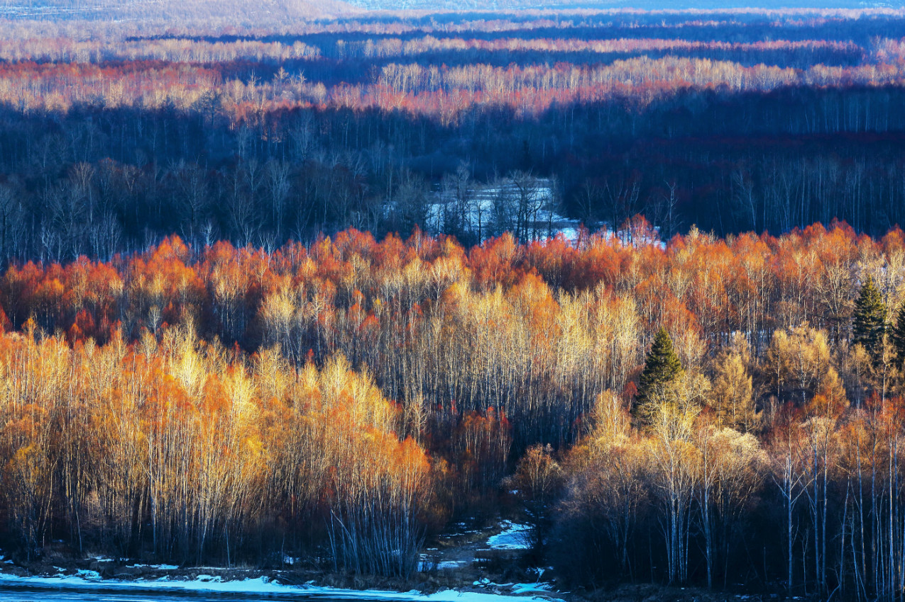
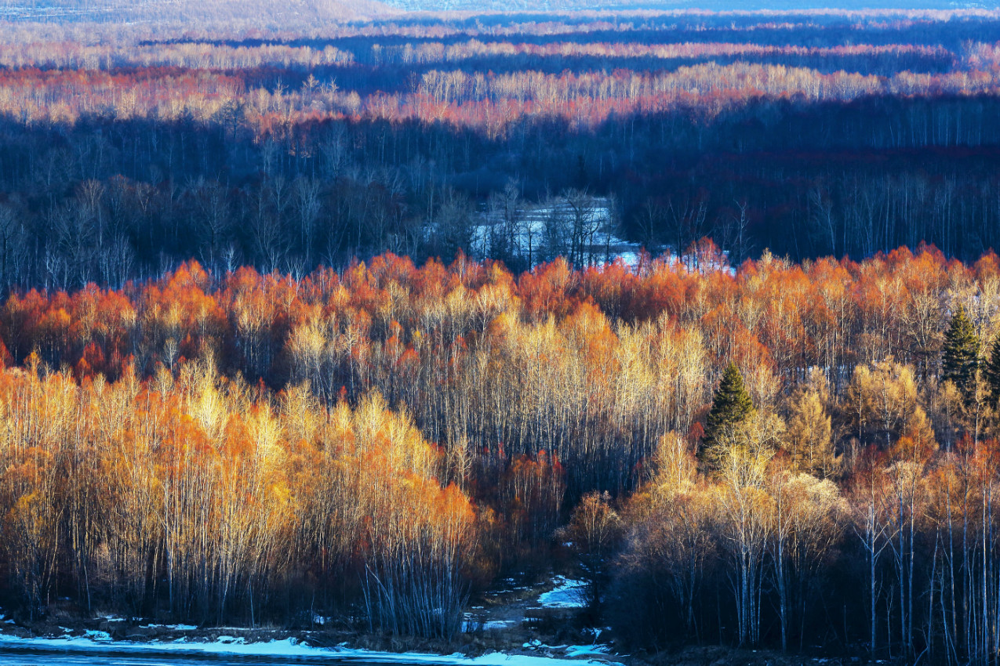

大兴安岭植物介绍
大兴安岭位于中国东北部，是中国重要的自然保护区之一。这里拥有丰富的植物资源，包括多种草本植物、树木和草地植被。
大兴安岭位于中国东北部，横跨黑龙江省和内蒙古自治区，是中国最大的林区之一。
这里属于寒温带气候，冬季寒冷漫长，夏季短暂凉爽。大兴安岭拥有广袤的原始森林，主要树种包括兴安落叶松、樟子松、红皮云杉和白桦等。
大兴安岭位于中国东北部，是中国重要的自然保护区之一。这里拥有丰富的植物资源，包括多种草本植物、树木和草地植被。
大兴安岭位于中国东北部，横跨黑龙江省和内蒙古自治区，是中国最大的林区之一。
这里属于寒温带气候，冬季寒冷漫长，夏季短暂凉爽。大兴安岭拥有广袤的原始森林，主要树种包括兴安落叶松、樟子松、红皮云杉和白桦等。
